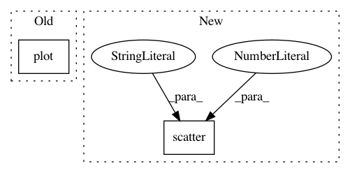

6df9cbf6888fd1482ceeaf4316b60a9714b5ce82,demo/draw_boundaries.py,,,#,12
Before Change
plt.title("{} results".format(s))
plt.plot(X[reds, 0], X[reds, 1], "ro")
plt.plot(X[blues, 0], X[blues, 1], "bo")
confs_grid = model.predict(np.c_[xx.ravel(), yy.ravel()])
// draw classification contours
After Change
if s != "original":
plt.scatter(X_aug[reds, 0], X_aug[reds, 1], edgecolor="black", s=20, cmap=cm, marker="o", c=colors[1])
plt.scatter(X_aug[blues, 0], X_aug[blues, 1], edgecolor="black", s=20, cmap=cm, marker="^", c=colors[0])
train_acc = model.evaluate(X, Y_cat, verbose=0)
plt.xlabel("train accuracy = %d%%" % (train_acc[1] * 100))
In pattern: SUPERPATTERN
Frequency: 3
Non-data size: 2
Instances
Project Name: IBM/adversarial-robustness-toolbox
Commit Name: 6df9cbf6888fd1482ceeaf4316b60a9714b5ce82
Time: 2017-07-03
Author: valentina.zantedeschi@ibm.com
File Name: demo/draw_boundaries.py
Class Name:
Method Name:
Project Name: NeuromorphicProcessorProject/snn_toolbox
Commit Name: 70c3efbc796b13121395468ca6fe50e5fdc3570e
Time: 2018-02-02
Author: bodo.rueckauer@gmail.com
File Name: snntoolbox/simulation/plotting.py
Class Name:
Method Name: plot_spiketrains
Project Name: SheffieldML/GPy
Commit Name: ca60ad3195641ed5c48b00b565f1a4fb97c57431
Time: 2015-09-02
Author: ibinbei@gmail.com
File Name: GPy/plotting/matplot_dep/dim_reduction_plots.py
Class Name:
Method Name: plot_magnification